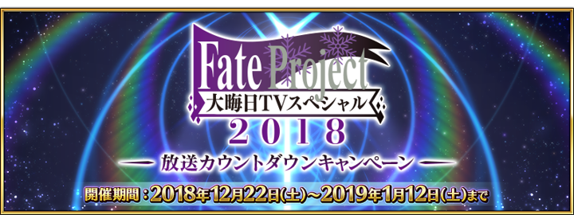
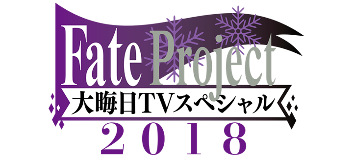

感謝您使用「Fate/Grand Order」。
2018年12月22日(六)在「FGO冬祭 2018-2019 ～移動大馬戲團！～」宮城會場內舉辦的「『Fate/Grand Order』嘉賓訪談 2018-2019」，發表了有關以「Fate/Grand Order」為首的FGO PROJECT及Fate系列的新情報。
以下介紹一部份新情報。
◆記念「『Fate/Grand Order』嘉賓訪談 in FGO冬祭 2018-2019」的舉辦贈送聖晶石10個！◆
為了記念「『Fate/Grand Order』嘉賓訪談 in FGO冬祭 2018-2019」的舉辦，向2018年12月23日(日) AM2:59前通過「特異點F 炎上汙染都市 冬木」的Master贈送聖晶石10個。

■對象期間
2018年12月23日(日) AM3:00～12月26日(三) AM2:59
■贈送內容
聖晶石 10個
■領取條件
2018年12月23日(日) AM2:59前通過「特異點F 炎上汙染都市 冬木」的Master對象
※期間內未登入的話無法領取。
※禮物只能領取1次。
※在上述時間前，在管理室(ターミナル)畫面中的關卡橫幅必須要有「CLEAR」的文字顯示。

◆「Fate Project 除夕 TV特別 2018」放送倒數宣傳活動的舉辦發表！◆
為了記念「Fate Project 除夕 TV特別 2018」的放送，發表了舉辦「Fate Project 除夕 TV特別 2018」放送倒數宣傳活動。
◆「2019年新年宣傳活動」一部份情報先行公開！◆
介紹預定自2019年1月1日(二)舉辦的「2019年新年宣傳活動」一部份內容。
1.達成10萬轉推，贈送新年限定概念禮裝＆2019萬QP！
2019年1月1日(二) 23:00(預定)在Fate/Grand Order官方Twitter(@fgoproject)，會投稿「2019年新年宣傳活動」的推特。宣傳活動推特在2019年1月3日(四) 22:59(預定)前達成10萬轉推的話，向所有Master贈送新年限定★4(SR)概念禮裝1張與2019萬QP。
2.壓歲錢福袋2019
「壓歲錢福袋2019」在達文西工房的「魔力稜鏡交換」登場！
可以期間限定用魔力稜鏡19個交換「1,000萬QP」「友情點數 10,000pt」「概念禮裝經驗值卡★4(SR) 1張」「カルデアの夢火 1個」。
3.期間限定「福袋召喚2019」舉辦決定！
自2018年12月31日(一) 23:00(預定)舉辦期間限定「福袋召喚2019」，是只限有償聖晶石15個才能召喚的確定1位期間限定★5(SSR)Servant的10次召喚。
「福袋召喚2019」是在過去期間限定Pick Up召喚登場的Servant從全43位之中確定1位★5(SSR)Servant。

※一人僅限1次。
※一部份的★4(SR)、★3(R)Servant及概念禮裝也會被抽出。
※用有償聖晶石15個才能召喚可能です。無法用無償聖晶石召喚。
※聖晶石購入時賦予的「附贈(オマケ)」為無償聖晶石。
由於不包含在有償聖晶石的個數，請注意別搞錯。
「2019年新年宣傳活動」的詳情日後會告知。

◆Fate Project 除夕 TV特別 2018◆
在「Fate Project 除夕 TV特別 2018」，除了劇場版「Fate/stay night [Heaven’s Feel]」Ⅰ.presage flower 地上波初放送外，初放送動畫製作TROYCA經手的TYPE-MOON新作動畫。
另外，回顧「Fate/Grand Order」第2部「Cosmos in the Lostbelt」開幕等的2018年的Fate Project。
■番組詳細
節目名:Fate Project 除夕 TV特別 2018
放送時間:2018年12月31日(一) 20:00～
放送局:TOKYO MX / 群馬テレビ / とちぎテレビ / BS11 / ニコニコ生放送 / AbemaTV
其他線下活動及週邊請參考原公告。
今後也請多多指教「Fate/Grand Order」。